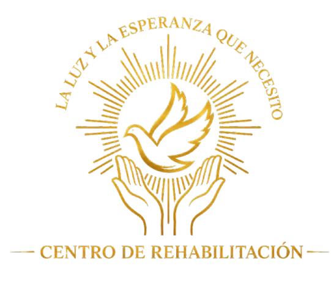

PLATAFORMA INSTITUCIONAL
Generador de
Expedientes de Entrevista
Preparación, revisión y firma de la documentación necesaria para cada participación audiovisual.
25 documentos
Firma electrónica
Acceso restringido

ÁREA DE PERSONAL
Bienvenido de nuevo
Ingresa con la cuenta de Google autorizada para consultar y preparar los documentos del expediente.
Acceso restringidoDisponible únicamente para personal autorizado.
La autenticación verificará tu identidad antes de permitir el acceso. El Centro no solicitará ni almacenará tu contraseña de Google.